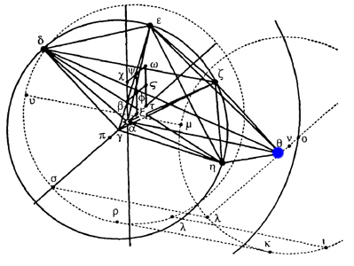
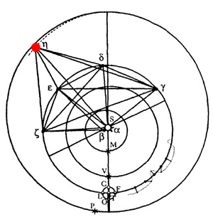
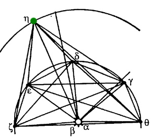
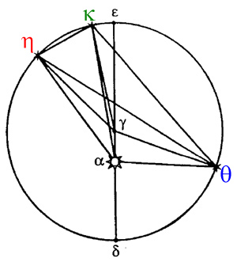

If you've done your homework, you'll know that a circle can be drawn through any three points. To get three points on Mars's orbit, he uses the work he has already done in chapters 26 through 28, when he was investigating the motion of the Earth.

In those chapters, he looked at Mars from multiple points on the Earth's orbit by using observations spaced 686 days (one Mars year) apart. Thus, he had a precise determination of the direction of Mars as seen by the Sun, and its distance from the sun. Kepler summarizes these results and presents a diagram:
Distance
Location
Chapter 26
147,750
14°16'52" Taurus
θ
Chapter 27
163,100
5°24'21" Libra
η
Chapter 28
166,255
8°19' 4" Virgo
κ

Here's how he works through determining the eccentricity and the direction of the line of apsides. Note how he uses triangle ηγκ to know something about the center before he knows where it is! (.swf)
After determining an eccentricity of 9768 and a line of apsides in 27°8'36" Leo, Kepler writes:
All this is completely erroneous, as you can tell by sustituting other distances, belonging to other eccentric positions, for one or more of the distances used... Every time you try this, you will find, by an equally certain and irrefutable argument, that all those numbers come out differently. (pp.433-434)
Here, you can see trying out two different sets of three observations. With each set of observations, we arrive "by a certain argument" at a different hypothesized circular orbit, and thus a different eccentricity and line of apsides:
Kepler ends the title of this chapter by warning the reader that he is working, "with, however, a false assumption." Do you now know what that false assumption is?